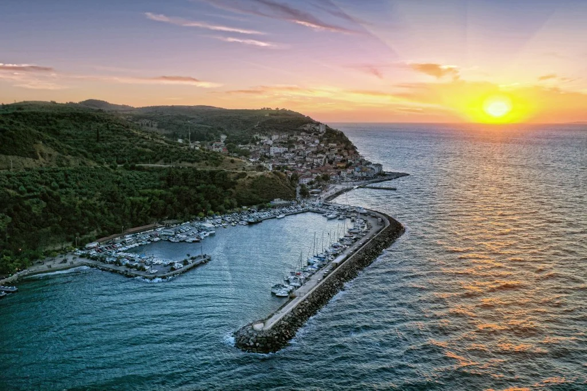
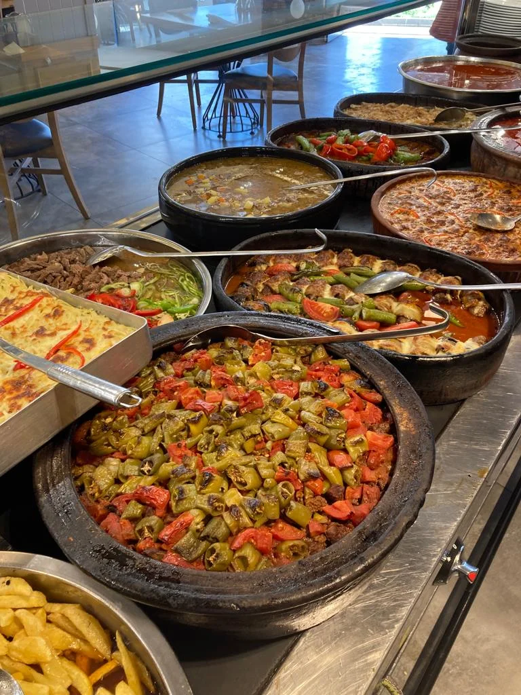
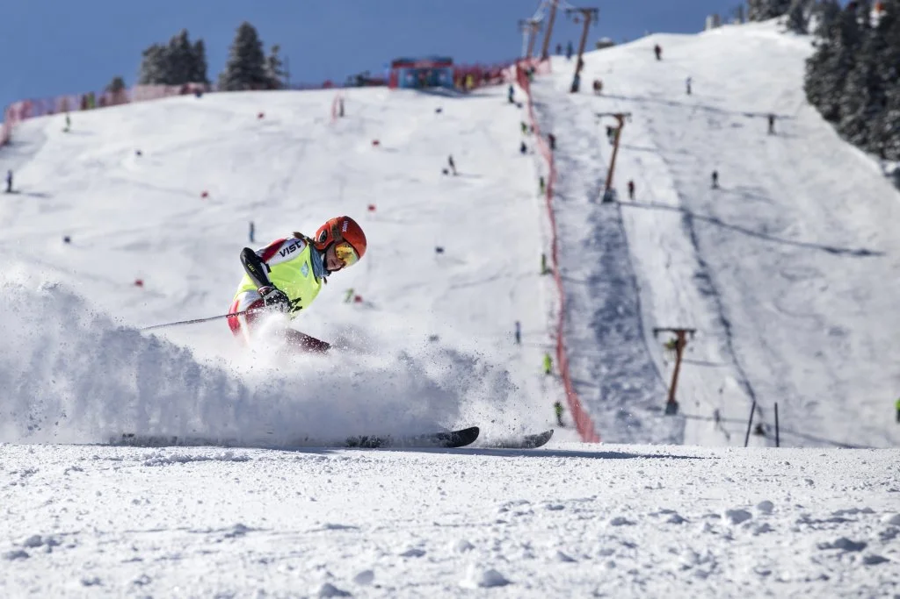

Blog
Bursa hakkında yazılar

Gezi Rehberi
Bursa'da Bir Günde Neler Yapılır?
Güne Ulu Cami ve Hanlar Bölgesi'ni gezerek başlayın. Öğle yemeğinde pideli köfte veya İskender kebap yiyin. Öğleden sonra Yeşil Türbe ve Muradiye Külliyesi'ni görün, akşamı Tophane'de şehri izleyerek bitirin.

Gastronomi
Bursa'nın Lezzet Rehberi
Bursa'ya gelince İskender kebap, pideli köfte ve cantığı mutlaka deneyin. Tatlı olarak sütlü helva ve kestane şekeri, kahvaltıda ise tahinli pide ve Bursa simidi sizi bekliyor.

Doğa
Uludağ'da Kış Keyfi
Uludağ, kışın kayak yapmak isteyenlerin en sevdiği yerlerden biri. Yazın ise yürüyüş ve piknik için güzel bir seçenek. Şehir merkezinden teleferikle de dağa çıkabilirsiniz.